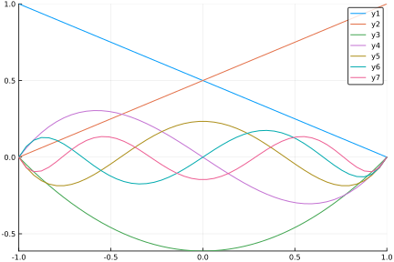

Basis functions
Shape functions, also known as basis functions, interpolation polynomials and so on. Typically unknown field variable is interpolated from element nodal values using continuous functions. That is,
math
Standard Lagrange shape functions are implemented.
Linear shape functions:
- Seg2 (2-node segment)
- Tri3 (3-node triangle)
- Quad4 (4-node quadrangle)
- Tet4 (4-node tetrahedron)
- Pyr5 (5-node pyramid)
- Wedge6 (6-node wedge)
- Hex8 (8-node hexahedra)
Quadratic and biquadratic shape functions:
- Seg3
- Tri6, Tri7
- Quad8, Quad9
- Tet10
- Wedge15
- Hex20, Hex27
NURBS shape functions:
- NSeg
- NSurf
- NSolid
Creating new basis is done simply by calling that constructor, without any arguments:
julia> Seg2()
Seg2()
julia> Tri3()
Tri3()
julia> Quad4()
Quad4()The dimensions of basis functions can be determined by size and length. In JuliaFEM, we have a convention that arrays grow on right according to number of nodes and down according to the spatial index. So if we have a row vector $\boldsymbol N$ and a column vector $\boldsymbol u$, interpolation goes $u = \boldsymbol N \boldsymbol u$:
julia> N = [1 2 3] # evaluated basis functions
1×3 Array{Int64,2}:
1 2 3
julia> u = [1, 2, 3] # field value at discrete points
3-element Array{Int64,1}:
1
2
3
julia> N*u
1-element Array{Int64,1}:
14For example, Quad4 is defined in two dimensions and it has 4 nodes, so
julia> B = Quad4()
Quad4()
julia> size(B)
(2, 4)
julia> length(B)
4Evaluating basis functions and they partial derivatives with respect to some $\xi$ is done efficiently using eval_basis! and eval_dbasis!. For these commands one needs to allocate array outside of the hot loops to get speed.
julia> N = zeros(1, length(B))
1×4 Array{Float64,2}:
0.0 0.0 0.0 0.0
julia> dN = zeros(size(B)...)
2×4 Array{Float64,2}:
0.0 0.0 0.0 0.0
0.0 0.0 0.0 0.0
julia> xi = (0.0, 0.0)
(0.0, 0.0)
julia> eval_basis!(B, N, xi)
1×4 Array{Float64,2}:
0.25 0.25 0.25 0.25
julia> eval_dbasis!(B, dN, xi)
2×4 Array{Float64,2}:
-0.25 0.25 0.25 -0.25
-0.25 -0.25 0.25 0.25For Langrange interpolation polynomials, by definition, on each node shape function corresponding to that node gets value of 1 and the rest is zero. Node ordering follows the same defined in e.g. in ABAQUS and in many other FEM softwares. The actual shape of domain can be inspected using command get_reference_element_coordinates:
julia> get_reference_element_coordinates(Quad4)
((-1.0, -1.0), (1.0, -1.0), (1.0, 1.0), (-1.0, 1.0))for xi in get_reference_element_coordinates(Quad4)
eval_basis!(B, N, xi)
println("$N at $xi")
end[1.0 0.0 0.0 0.0] at (-1.0, -1.0)
[0.0 1.0 0.0 0.0] at (1.0, -1.0)
[0.0 0.0 1.0 0.0] at (1.0, 1.0)
[0.0 0.0 0.0 1.0] at (-1.0, 1.0)Mathematics
Without knowing anything about the shape of the real domain (after all, basis is usually defined on dimensionless, reference domain), eval_dbasis! is calculating gradient with respect to dimensionless coordinates $\xi_i$, i.e.
Usually this is not wanted, but instead gradient of basis functions is calculated with respect to natural coordinates $X_i$,
Without going into the mathematical details, to transform partial derivatives from reference element to natural coordinates, inverse of Jacobian matrix is needed.
julia> X = ([0.0, 0.0], [1.0, 0.0], [1.0, 1.0], [0.0, 1.0])
([0.0, 0.0], [1.0, 0.0], [1.0, 1.0], [0.0, 1.0])
julia> xi = (0.0, 0.0)
(0.0, 0.0)
julia> J = jacobian(B, X, xi)
2×2 Array{Float64,2}:
0.5 0.0
0.0 0.5
julia> inv(J) * dN
2×4 Array{Float64,2}:
-0.5 0.5 0.5 -0.5
-0.5 -0.5 0.5 0.5Or directly, using grad:
julia> dNdX = grad(B, X, xi)
2×4 Array{Float64,2}:
-0.5 0.5 0.5 -0.5
-0.5 -0.5 0.5 0.5If interpolation domain is a manifold, i.e. space having lower dimension than the actual space (read: surface in 3d), Jacobian is not square and inverse cannot be taken.
julia> X2 = ([0.0,0.0,0.0], [1.0, 0.0,1.0], [1.0,1.0,1.0], [0.0,1.0,0.0])
([0.0, 0.0, 0.0], [1.0, 0.0, 1.0], [1.0, 1.0, 1.0], [0.0, 1.0, 0.0])
julia> xi = (0.0, 0.0)
(0.0, 0.0)
julia> J = jacobian(B, X2, xi)
2×3 Array{Float64,2}:
0.5 0.0 0.5
0.0 0.5 0.0One can use Jacobian to calculate surface integral:
julia> 4*norm(cross(J[1,:], J[2,:])), sqrt(2) # area of manifold
ERROR: UndefVarError: cross not definedGradient of e.g. displacement field or temperature field can be also evaluated, with the same grad function, by adding field u:
julia> u = ([0.0, 0.0], [1.0, -1.0], [2.0, 3.0], [0.0, 0.0])
([0.0, 0.0], [1.0, -1.0], [2.0, 3.0], [0.0, 0.0])
julia> T = (1.0, 2.0, 3.0, 4.0)
(1.0, 2.0, 3.0, 4.0)
julia> grad(B, u, X, xi)
2×2 LinearAlgebra.Adjoint{Float64,Array{Float64,2}}:
1.5 0.5
1.0 2.0
julia> grad(B, T, X, xi)
1×2 LinearAlgebra.Adjoint{Float64,Array{Float64,1}}:
0.0 2.0One can interpolate fields using basis, i.e. calculate $u = \boldsymbol{N}\boldsymbol{u}$ as described before:
julia> interpolate(B, u, xi)
2-element Array{Float64,1}:
0.75
0.5
julia> interpolate(B, T, xi)
2.5In "hot loops", it's absolutely necessary that no unnecessary memory allcations happen as it is reducing the performance dramatically from C speed. To avoid unnecessary memory allocations, a struct BasisInfo is introduced, containing workspace for calculations.
julia> bi = BasisInfo(Quad4)
BasisInfo{Quad4,Float64}([0.0 0.0 0.0 0.0], [0.0 0.0 0.0 0.0; 0.0 0.0 0.0 0.0], [0.0 0.0 0.0 0.0; 0.0 0.0 0.0 0.0], [0.0 0.0; 0.0 0.0], [0.0 0.0; 0.0 0.0], 0.0)
julia> eval_basis!(bi, X, xi)
BasisInfo{Quad4,Float64}([0.25 0.25 0.25 0.25], [-0.25 0.25 0.25 -0.25; -0.25 -0.25 0.25 0.25], [-0.5 0.5 0.5 -0.5; -0.5 -0.5 0.5 0.5], [0.5 0.0; 0.0 0.5], [2.0 -0.0; -0.0 2.0], 0.25)
julia> bi.J # Jacobian
2×2 Array{Float64,2}:
0.5 0.0
0.0 0.5
julia> bi.N # shape functions
1×4 Array{Float64,2}:
0.25 0.25 0.25 0.25
julia> bi.dN # shape function derivatives, with respect to xi
2×4 Array{Float64,2}:
-0.25 0.25 0.25 -0.25
-0.25 -0.25 0.25 0.25
julia> bi.detJ # determinant of Jacobian
0.25
julia> bi.grad # shape function derivatives, with respect to X
2×4 Array{Float64,2}:
-0.5 0.5 0.5 -0.5
-0.5 -0.5 0.5 0.5
julia> bi.invJ # inverse of Jacobian
2×2 Array{Float64,2}:
2.0 -0.0
-0.0 2.0Calculating gradient of some field u can be done memory efficiently using this BasisInfo structure:
julia> gradu = zeros(2, 2)
2×2 Array{Float64,2}:
0.0 0.0
0.0 0.0
julia> grad!(bi, gradu, u)
2×2 Array{Float64,2}:
1.5 0.5
1.0 2.0Defining custom shape functions
Depending from the type of shape functions, they can be created more or less automatic way. An ultimate goal is to create all kind of shape functions just by defining the general principles and let computer handle the all boring things and create shape functions automatically using metaprogramming to get efficient code.
For Lagrange type interpolation, ones needs only to define polynomial and corner points for domain. For example, if domain is $[0,1]^2$, one can use create_basis, and give polynomial with degree matching to the number of point to interpolate.
julia> code = create_basis(
:MyQuad,
"My special domain",
(
(0.0, 0.0),
(1.0, 0.0),
(1.0, 1.0),
(0.0, 1.0),
),
"1 + u + v + u*v"
);
ERROR: MethodError: no method matching differentiate(::Char, ::Symbol)
Closest candidates are:
differentiate(!Matched::Expr, ::Any) at /home/travis/.julia/packages/Calculus/mbqhh/src/differentiate.jl:16
differentiate(!Matched::Calculus.SymbolParameter{:^}, ::Any, !Matched::Any) at /home/travis/.julia/packages/Calculus/mbqhh/src/differentiate.jl:27
differentiate(!Matched::Calculus.SymbolParameter{:+}, ::Any, !Matched::Any) at /home/travis/.julia/packages/Calculus/mbqhh/src/differentiate.jl:41
...
julia> eval(code)
ERROR: UndefVarError: code not definedWhat we have defined is a interpolation polynomial and "corner points". As a result, we have a new basis MyQuad, working just like expected. All Lagrange polynomials are done like this.
julia> B = MyQuad()
ERROR: UndefVarError: MyQuad not defined
julia> xi = (0.5, 0.5)
(0.5, 0.5)
julia> eval_basis!(B, N, xi)
1×4 Array{Float64,2}:
0.0625 0.1875 0.5625 0.1875In this case, and considering domain, partial derivatives of shape functions are with respect to $X$, because interpolation polynomials are calculated against real domain and not "reference domain". That is, partial derivatives should match to what already calcualated.
julia> eval_dbasis!(B, dN, xi)
2×4 Array{Float64,2}:
-0.125 0.125 0.375 -0.375
-0.125 -0.375 0.375 0.125Jacobian should be identity matrix:
julia> J = jacobian(B, X, xi)
2×2 Array{Float64,2}:
0.5 0.0
0.0 0.5And taking gradient with respect to $X$ should return also same result than before:
julia> u = ([0.0, 0.0], [1.0, -1.0], [2.0, 3.0], [0.0, 0.0])
([0.0, 0.0], [1.0, -1.0], [2.0, 3.0], [0.0, 0.0])
julia> grad(B, u, X, xi)
2×2 LinearAlgebra.Adjoint{Float64,Array{Float64,2}}:
1.75 0.75
2.0 3.0Shape functions can be defined manually and calculate partial derivatives automatically. For example, for pyramid elements typical ansatz approach is not applicable. Some other degenerated elements exists in fracture mechanics.
For example, C1-continuous Hermite shape functions ready to approximate Euler-Bernoulli beam equations can be defined as:
julia> code = create_basis(
:C1Hermite,
"C1-continuous Hermite shape functions",
(
(0.0,),
(0.0,),
(1.0,),
(1.0,)
),
(
"2*u^3 - 3*u^2 + 1",
"u^3 - 2*u^2 + u",
"-2*u^3 + 3*u^2",
"u^3 - u^2"
)
);
julia> eval(code)
ERROR: UndefVarError: FEMBasis not definedAgain, we should have 1.0 in corresponding nodal point or it's derivative, according to that order we have $u(0), u'(0), u(1), u'(1)$, so
julia> B = C1Hermite()
ERROR: UndefVarError: C1Hermite not defined
julia> N = zeros(1, 4)
1×4 Array{Float64,2}:
0.0 0.0 0.0 0.0
julia> dN = zeros(1, 4)
1×4 Array{Float64,2}:
0.0 0.0 0.0 0.0
julia> eval_basis!(B, N, (0.0,))
ERROR: BoundsError: attempt to access (0.0,)
at index [2]
julia> eval_dbasis!(B, dN, (0.0,))
ERROR: BoundsError: attempt to access (0.0,)
at index [2]
julia> eval_basis!(B, N, (1.0,))
ERROR: BoundsError: attempt to access (1.0,)
at index [2]
julia> eval_dbasis!(B, dN, (1.0,))
ERROR: BoundsError: attempt to access (1.0,)
at index [2]The last option is to build everything from scratch. For that, one must import and define following functions:
- Base.size
- Base.length
- FEMBase.getreferenceelement_coordinates
- FEMBase.eval_basis!
- FEMBase.eval_dbasis!
As an examples, a simple implementation of P-hierarchical 1d-basis would then be the following:
import Base: size, length
import FEMBase: get_reference_element_coordinates,
eval_basis!, eval_dbasis!,
AbstractBasis
type PSeg <: AbstractBasis
order :: Int
end
function PSeg()
return PSeg(1)
end
function length(basis::PSeg)
return basis.order+1
end
function size(basis::PSeg)
return (1, basis.order+1)
end
function get_reference_element_coordinates(basis::PSeg)
return ((-1.0,), (1.0,))
endWARNING: could not import FEMBase.AbstractBasis into ex-FEMBaseNext, define Legengre polynomials:
"""
get_legendre_polynomial(n)
Return Legendgre polynomial of order `n` to inverval ξ ∈ [1, 1].
Implementation uses Bonnet's recursion formula. See
https://en.wikipedia.org/wiki/Legendre_polynomials
"""
function get_legendre_polynomial(n)
n == 0 && return xi -> 1.0
n == 1 && return xi -> xi
Pm1 = get_legendre_polynomial(n-1)
Pm2 = get_legendre_polynomial(n-2)
A(xi) = (2.0*n-1.0)*xi*Pm1(xi)
B(xi) = (n-1.0)*Pm2(xi)
return xi -> (A(xi)-B(xi))/n
end
"""
get_legendre_polynomial_derivative(n)
Return derivative of Legendgre polynomial of order `n` to
inverval ξ ∈ [-1, 1]
"""
function get_legendre_polynomial_derivative(n)
n == 0 && return xi -> 0.0
n == 1 && return xi -> 1.0
Pm1 = get_legendre_polynomial_derivative(n-1)
Pm2 = get_legendre_polynomial_derivative(n-2)
A(xi) = (2.0*(n-1.0)+1.0)*xi*Pm1(xi)
B(xi) = (n+1.0-1.0)*Pm2(xi)
return xi -> (A(xi)-B(xi))/(n-1.0)
endAnd finally implement eval_basis! and eval_dbasis! functions:
function eval_basis!{T}(basis::PSeg, N::Matrix{T}, xi::Tuple{T})
n = length(basis)
t = xi[1]
N[1] = 0.5*(1-t)
N[2] = 0.5*(1+t)
n < 3 && return N
for i=3:n
j = i-1
P1 = get_legendre_polynomial(j)
P2 = get_legendre_polynomial(j-2)
N[i] = 1.0/sqrt(2.0*(2.0*j-1.0))*(P1(t)-P2(t))
end
return N
end
function eval_dbasis!{T}(basis::PSeg, dN::Matrix{T}, xi::Tuple{T})
n = length(basis)
t = xi[1]
dN[1] = -0.5
dN[2] = 0.5
n < 3 && return N
for i=3:n
j = i-1
P1 = get_legendre_polynomial_derivative(j)
P2 = get_legendre_polynomial_derivative(j-2)
dN[i] = 1.0/sqrt(2.0*(2.0*j-1.0))*(P1(t)-P2(t))
end
return dN
end
nothing # hideLet's try it:
julia> B = PSeg()
ERROR: UndefVarError: PSeg not defined
julia> N = zeros(1, length(B))
1×4 Array{Float64,2}:
0.0 0.0 0.0 0.0
julia> eval_basis!(B, N, (0.0,))
ERROR: BoundsError: attempt to access (0.0,)
at index [2]
julia> B.order = 2
ERROR: type Quad4 has no field order
julia> N = zeros(1, length(B))
1×4 Array{Float64,2}:
0.0 0.0 0.0 0.0
julia> eval_basis!(B, N, (0.0,))
ERROR: BoundsError: attempt to access (0.0,)
at index [2]